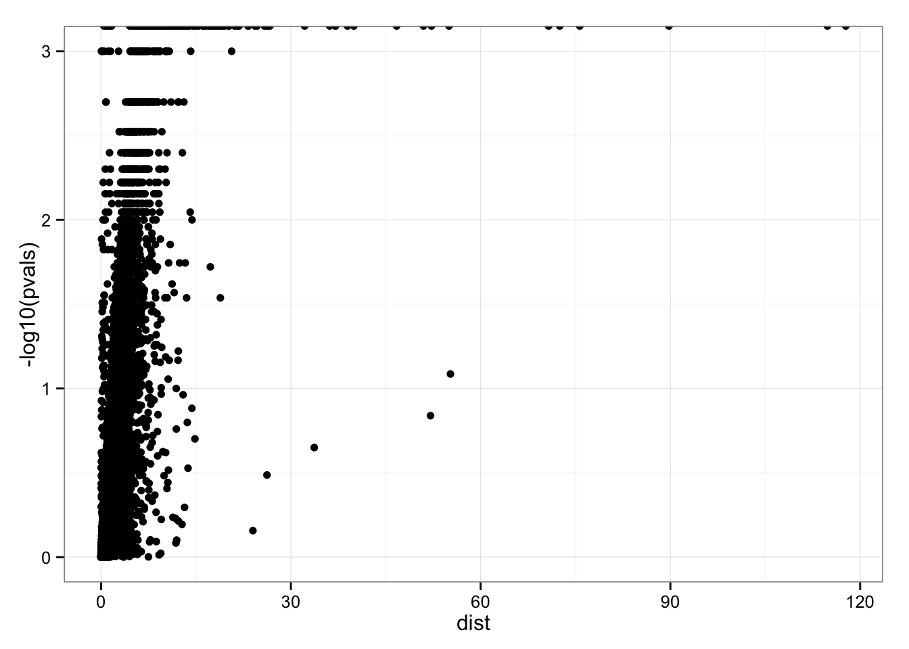
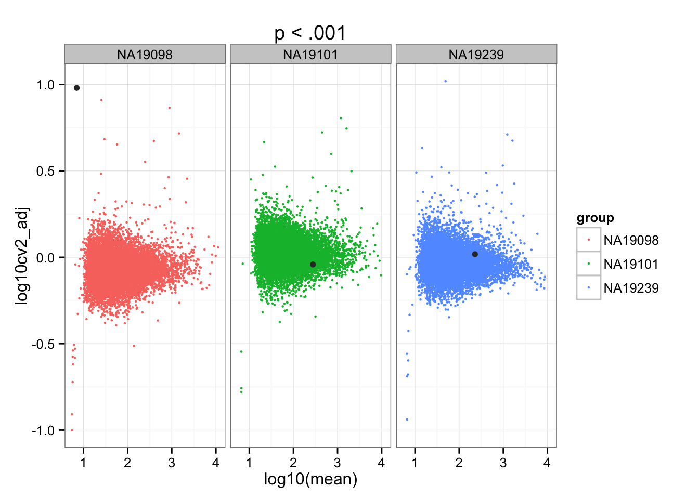

Last updated: 2015-12-11
Code version: 7a25b2aef5c8329d4b5394cce595bbfc2b5b0c3e
Quantify statistical significance of individual differences between adjusted CVs.
We permuted the wells labels across samples for 10,000 times. Then, for each gene, we computed the number of permuted samples produced larger distance than the observed distance between standardized coefficients of variance between individuals.
library("data.table")
library("dplyr")
library("limma")
library("edgeR")
library("ggplot2")
library("grid")
library("Humanzee")
theme_set(theme_bw(base_size = 12))
source("functions.R")Input annotation of only QC-filtered single cells. Remove NA19098.r2
anno_filter <- read.table("../data/annotation-filter.txt",
header = TRUE,
stringsAsFactors = FALSE)
dim(anno_filter)[1] 568 5Import endogeneous gene molecule counts that are QC-filtered, CPM-normalized, ERCC-normalized, and also processed to remove unwanted variation from batch effet. ERCC genes are removed from this file.
molecules_ENSG <- read.table("../data/molecules-final.txt",
header = TRUE, stringsAsFactors = FALSE)
stopifnot(NCOL(molecules_ENSG) == NROW(anno_filter))We compute squared CV across cells for each individual and then for each individual CV profile, account for mean dependency by computing distance with respect to the data-wide coefficient variation on the log10 scale.
ENSG_cv <- Humanzee::compute_cv(log2counts = molecules_ENSG,
grouping_vector = anno_filter$individual)
ENSG_cv_adj <- Humanzee::normalize_cv(group_cv = ENSG_cv,
log2counts = molecules_ENSG,
anno = anno_filter)Individual CV vectors are standarized for individual CV mean and coefficients of variation across genes.
df_cv <- data.frame(NA19098 = ENSG_cv_adj[[1]]$log10cv2_adj,
NA19101 = ENSG_cv_adj[[2]]$log10cv2_adj,
NA19239 = ENSG_cv_adj[[3]]$log10cv2_adj)
library(matrixStats)
df_norm <- sweep(df_cv, MARGIN = 2, STATS = colMeans(as.matrix(df_cv)), FUN = "-")
df_norm <- sweep(df_norm, MARGIN = 2, STATS = sqrt(colVars(as.matrix(df_cv))), FUN = "/")
colnames(df_norm) <- names(ENSG_cv_adj)Compute metrics for quantifying similarity between the three individual coefficients of variation.
library(matrixStats)
df_norm <- as.data.frame(df_norm)
df_norm$squared_dev <- rowSums( ( df_norm - rowMedians(as.matrix(df_norm)) )^2 )
df_norm$abs_dev <- rowSums(abs( df_norm - rowMedians(as.matrix(df_norm)) ))Export some rdas.
if (!file.exists("rda/cv-adjusted-statistical-test-permute/adj-cv.rda")) {
save(df_norm, file = "rda/cv-adjusted-statistical-test-permute/adj-cv.rda")
}
if (!file.exists("rda/cv-adjusted-statistical-test-permute/permute-cv-test.rda")) {
save(molecules_ENSG, anno_filter,
file = "rda/cv-adjusted-statistical-test-permute/permute-cv-test.rda")
}Compute permuted distances for each gene.
sbatch ../code/permuted-cv-test.sbatchCompute permutation-based p-values for each gene.
sbatch ../code/permuted-cv-compute-pval.sbatchConfirm that the gene with the larger SSM and SAM are significant with a p-value of 0.
load("rda/cv-adjusted-statistical-test-permute/permuted-pval.rda")
permuted_pval$squared_dev[which.max(df_norm$squared_dev)][1] 0permuted_pval$squared_dev[order(df_norm$squared_dev, decreasing = T)[3]][1] 0library(ggplot2)
ggplot(data.frame(pvals = permuted_pval$squared_dev,
dist = df_norm$squared_dev),
aes(x = dist, y = pvals)) +
geom_point()
Gene with the largest Sum-of-Squared-Deviations.
ggplot(do.call(rbind, ENSG_cv_adj),
aes(x = log10(mean), y = log10cv2_adj)) +
geom_point(aes(col = group), cex = .8) + facet_wrap( ~ group) +
ggtitle("Gene with the largest SSM") +
geom_point(data = subset(do.call(rbind, ENSG_cv_adj),
c(1:NROW(ENSG_cv_adj[[1]])) %in%
order(df_norm$squared_dev, decreasing = TRUE )[1]),
colour = "grey20")
sessionInfo()R version 3.2.1 (2015-06-18)
Platform: x86_64-apple-darwin13.4.0 (64-bit)
Running under: OS X 10.10.5 (Yosemite)
locale:
[1] en_US.UTF-8/en_US.UTF-8/en_US.UTF-8/C/en_US.UTF-8/en_US.UTF-8
attached base packages:
[1] grid stats graphics grDevices utils datasets methods
[8] base
other attached packages:
[1] matrixStats_0.15.0 zoo_1.7-12 Humanzee_0.1.0
[4] ggplot2_1.0.1 edgeR_3.10.5 limma_3.24.15
[7] dplyr_0.4.3 data.table_1.9.6 knitr_1.11
loaded via a namespace (and not attached):
[1] Rcpp_0.12.2 magrittr_1.5 MASS_7.3-45 munsell_0.4.2
[5] lattice_0.20-33 colorspace_1.2-6 R6_2.1.1 stringr_1.0.0
[9] plyr_1.8.3 tools_3.2.1 parallel_3.2.1 gtable_0.1.2
[13] DBI_0.3.1 htmltools_0.2.6 yaml_2.1.13 assertthat_0.1
[17] digest_0.6.8 reshape2_1.4.1 formatR_1.2.1 evaluate_0.8
[21] rmarkdown_0.8.1 labeling_0.3 stringi_1.0-1 scales_0.3.0
[25] chron_2.3-47 proto_0.3-10